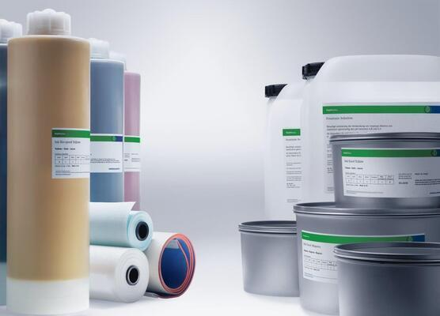

Heidelberg Coating është një kompani e specializuar në prodhimin e bojave për të përdorura në ndryshimet e siperfaqeve. Themeluar në vitin 1952 nga Alfred dhe Herbert Rentzsch, Heidelberg Coating ka pasur një përvojë të gjatë dhe të suksesshme në prodhimin dhe përdorimin e bojave. Në Kosovë, kompania operon që nga viti 2015, duke sjellë teknologjitë e fundit dhe cilësinë e lartë në tregun vendas. Heidelberg Coating është një emër i besueshëm në industrinë e bojave, ofrojë një gamë të gjerë të produkteve dhe shërbimeve të avancuara për klientët e tyre.
Produktet tona të ngjyrave ofrojnë një gamë të gjerë dhe të diversifikuar për nevojat e çdo klienti, duke filluar nga ngjyrat e jashtme që rrisin rezistencën ndaj ndikimit të kushteve atmosferike, deri te ngjyrat më të theksuara për ambientet brenda shtëpisë. Për ne, cilësia është e parësorja, dhe për këtë arsye ofrojmë një spektër të gjerë ngjyrash të zgjedhura me kujdes për të siguruar përshtatshmërinë dhe mbrojtjen e zgjeruar për çdo sipërfaqe. Pavarësisht nëse klienti është duke kërkuar një pamje të freskët për jashtë, apo dëshiron të krijojë një ambient më intym brenda shtëpisë, ne kemi zgjidhjen e duhur për të plotësuar çdo dëshirë. Cilësia e lartë e produktit dhe llojet e shumta të disponueshme bëjnë produktet tona të ngjyrave zgjedhjen ideale për çdo projekt ngjyrash.
Email:pronto_ks@hotmail.de
Phone: (+383) 44-137-768
Address:Richard Holbruk-Veternik-Prishtin 10000